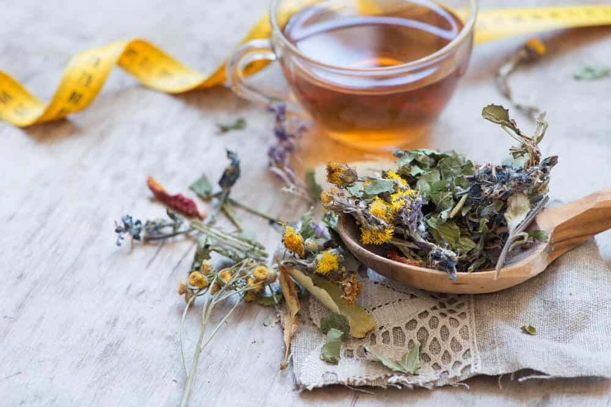

There are many types of herbal teas that can be used in beverages or medicinal teas.

What is herbal coffee?
The term "herbal tea" or "herbal tea" refers any hot-water infusion of any plant or combination thereof other than Camellia sinensis. Some tea lovers object to the term tea being used to describe herbal teas. These people advocate for the use the term tisane or the more formal and formal-sounding herbal infusion. We will however use the term "herbal infusion" as it is already widely used.
There are many herbal teas that can be enjoyed. Biofit tea They come in a variety of flavors and aromas. There are two main types of herbal teas: ones that can be consumed primarily as drinks and those that can be used for medicinal purposes. These two types of teas have a lot in common. Nearly all the herbs that are consumed as beverages offer potent health benefits. The line between medicine or drink can sometimes seem blurred.
The most loved types of herbal teas are:
Mint is a very popular herb to use in a beverage, either by itself or with other herbs. There are many types of mint. The most well-known are peppermint or spearmint. Another important mint is the apple mint. This mint is commonly grown in temperate gardens around the world and used in traditional Moroccan mint tee.
Lemon-scented herbs are another source of herbal teas. Infused in hot water, lemongrass is also a popular seasoning for Thai and Vietnamese cuisines. Lemon balm, lemon verbena (native Australian), and lemon verbena are all lemon-scented herbs. While the lemon-scented herbs may not be related to each other, they share certain aroma chemicals. Citral, which has been proven to have cancer-fighting properties, is one example of the lemony chemicals.
Relaxing Herbs - Chamomile, Tulsi and Other:
Chamomile is a well-known herb. It is also a popular tea for bedtime due to its relaxing properties. The tulsi is another relaxing herb that is less well-known, but just as important. Tulsi, also known as holy basil, is an Indian species of basil with a spicy and clove-like smell. Both tulsi, chamomile and other herbs have been shown to promote relaxation. They also show the ability to lower blood sugar. This can be important in managing type 2 diabetes. Tulsi is also effective in treating anxiety and has positive overall effects on your immune system.
These are only two examples of many herbs that promote relaxation. Caffeine-free herbal tees are considered to be relaxing. Some of the herbs that are used to reduce anxiety and help people relax include lemon balm, passionflower, and lemon balm.
Rooibos & Honeybush:
It would be a complete discussion about herbal teas without mentioning honeybush or rooibos. bioft tea benefits These two plants are from the West Cape province in South Africa and are often referred to collectively as "Red Tea". Both these plants can produce herbal teas without caffeine that taste and smell more like black tea than any infusions of other herbs. Rooibos, in particular, has been studied for its medicinal qualities. This includes its ability to treat or prevent asthma. Honeybush, although less well-studied, has similar properties. Both honeybush, rooibos, and honeybush can now be made in both red and green varieties. Due to their similar production methods, green honeybush as well as green rooibos are similar in flavor and properties to green tea.